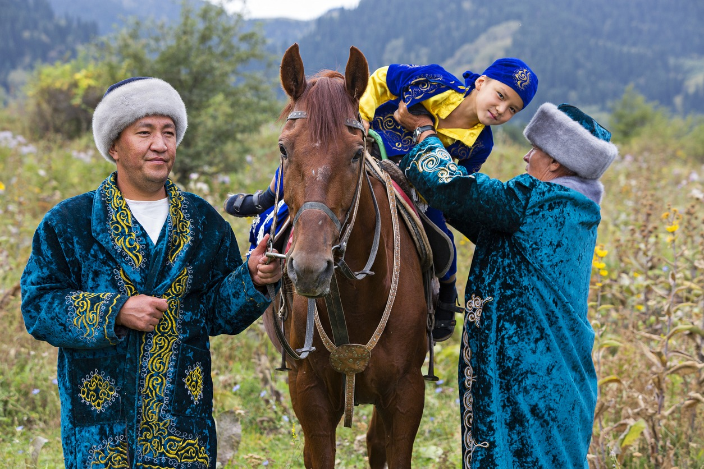
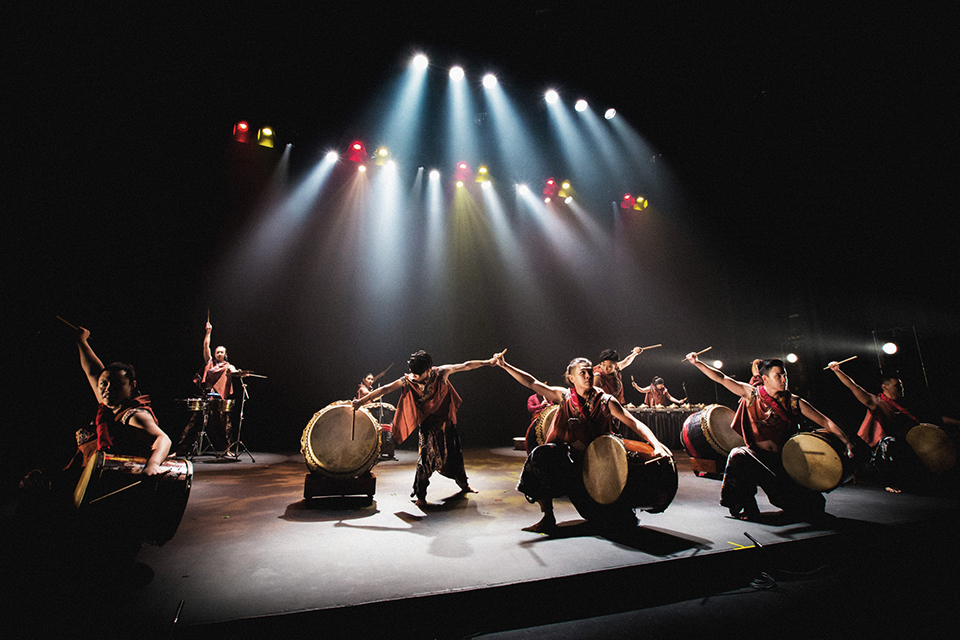

Traditions
Dombra The dombra is a two-stringed, long-necked, plucked instrument popular in Kazakh culture, while the kobyz is a bowed, ladle-shaped string instrument, both playing a significant role in Kazakh traditional music.
Beshbarmak a hearty, national dish of Kazakhstan and Kyrgyzstan, consisting of boiled meat (traditionally horse or lamb) served over thick, flat noodles, and often topped with onions and broth.
Chapan  The chapan, a traditional robe deeply rooted in Central Asian culture, particularly in Kazakhstan, is far more than just a piece of clothing. It's a tangible representation of history, climate adaptation, and social standing.
Kazakh Language
Cyrillic and Latin Scripts The world's writing systems are a testament to the diverse paths of human communication, with the Cyrillic and Latin scripts standing as prominent examples. While both trace their lineage back to the ancient Greek alphabet, their subsequent journeys have shaped distinct cultural and linguistic landscapes.
The world's writing systems are a testament to the diverse paths of human communication, with the Cyrillic and Latin scripts standing as prominent examples. While both trace their lineage back to the ancient Greek alphabet, their subsequent journeys have shaped distinct cultural and linguistic landscapes.
The world's writing systems are a testament to the diverse paths of human communication, with the Cyrillic and Latin scripts standing as prominent examples. While both trace their lineage back to the ancient Greek alphabet, their subsequent journeys have shaped distinct cultural and linguistic landscapes. Kazakh Idioms and Expressions  Kazakh idioms and expressions, like those of any culture, offer a fascinating glimpse into the nation's values, history, and worldview. They often employ vivid imagery and metaphors, drawing from nomadic traditions, nature, and social customs.
Kazakh idioms and expressions, like those of any culture, offer a fascinating glimpse into the nation's values, history, and worldview. They often employ vivid imagery and metaphors, drawing from nomadic traditions, nature, and social customs.
Kazakh idioms and expressions, like those of any culture, offer a fascinating glimpse into the nation's values, history, and worldview. They often employ vivid imagery and metaphors, drawing from nomadic traditions, nature, and social customs.Multilingual Culture  Kazakhstan's multilingual culture is a fascinating tapestry woven from its unique history and geographical position. Situated at the crossroads of Europe and Asia, the country has long been a melting pot of diverse ethnicities and languages. The official language, Kazakh, belongs to the Turkic family, reflecting the nation's nomadic heritage. However, Russian holds a special status, widely used in government, business, and everyday communication, a legacy of the Soviet era. This bilingualism is a defining characteristic of Kazakh society.
Kazakhstan's multilingual culture is a fascinating tapestry woven from its unique history and geographical position. Situated at the crossroads of Europe and Asia, the country has long been a melting pot of diverse ethnicities and languages. The official language, Kazakh, belongs to the Turkic family, reflecting the nation's nomadic heritage. However, Russian holds a special status, widely used in government, business, and everyday communication, a legacy of the Soviet era. This bilingualism is a defining characteristic of Kazakh society.
Kazakhstan's multilingual culture is a fascinating tapestry woven from its unique history and geographical position. Situated at the crossroads of Europe and Asia, the country has long been a melting pot of diverse ethnicities and languages. The official language, Kazakh, belongs to the Turkic family, reflecting the nation's nomadic heritage. However, Russian holds a special status, widely used in government, business, and everyday communication, a legacy of the Soviet era. This bilingualism is a defining characteristic of Kazakh society.Festivals & Celebrations
Nauryz  Nauryz, also spelled Nowruz or Navruz, is a significant celebration marking the Persian New Year and the arrival of spring. It's a festival deeply rooted in ancient traditions and is celebrated by diverse cultures across Central Asia, the Caucasus, the Balkans, and the Middle East, including Kazakhstan.
Nauryz, also spelled Nowruz or Navruz, is a significant celebration marking the Persian New Year and the arrival of spring. It's a festival deeply rooted in ancient traditions and is celebrated by diverse cultures across Central Asia, the Caucasus, the Balkans, and the Middle East, including Kazakhstan.
Nauryz, also spelled Nowruz or Navruz, is a significant celebration marking the Persian New Year and the arrival of spring. It's a festival deeply rooted in ancient traditions and is celebrated by diverse cultures across Central Asia, the Caucasus, the Balkans, and the Middle East, including Kazakhstan.Kazakh Wedding Traditions  Kazakh wedding traditions are a rich tapestry of customs and rituals, deeply rooted in the nation's nomadic heritage and emphasizing family, community, and respect for elders. These traditions, while evolving with modern times, still retain their core symbolic significance.
Kazakh wedding traditions are a rich tapestry of customs and rituals, deeply rooted in the nation's nomadic heritage and emphasizing family, community, and respect for elders. These traditions, while evolving with modern times, still retain their core symbolic significance.
Kazakh wedding traditions are a rich tapestry of customs and rituals, deeply rooted in the nation's nomadic heritage and emphasizing family, community, and respect for elders. These traditions, while evolving with modern times, still retain their core symbolic significance. Cultural Performances  Cultural performances in Kazakhstan are a vibrant expression of the nation's rich and diverse heritage, encompassing a wide range of artistic forms that have been passed down through generations. These performances serve not only as entertainment but also as vital carriers of cultural memory, preserving traditions, stories, and values.